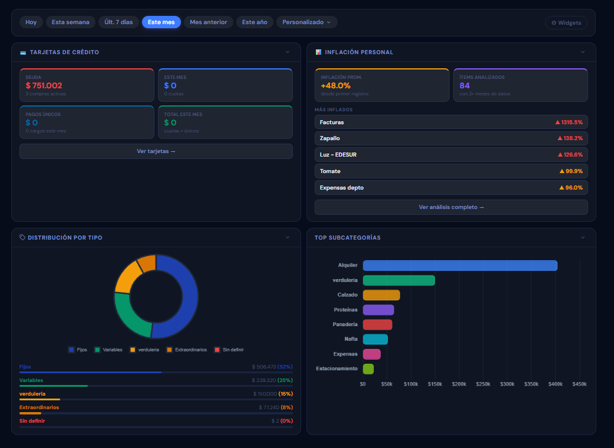

Dashboard Pro
Visualiza tu salud financiera con gráficos de torta por tipo, barras por subcategoría y widgets que puedes organizar a tu medida.

Visualiza tu salud financiera con gráficos de torta por tipo, barras por subcategoría y widgets que puedes organizar a tu medida.
